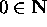
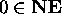
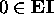
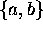
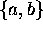
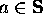
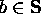
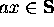
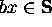

Practice Questions on Recursive Definition
Recursive Definition
Recursive Definition
Subjects to be Learned
- recursive/inductive definition
- basis clause
- basis
- inductive clause
- extremal clause
Contents
Sets which have too many elements to list them up, and for which there are no convenient
or obvious predicates to specify their elements can often be
defined using a recursive definition
(also called inductive definition). It essentially gives a procedure to generate
the members of the set one by one starting with some subset of its elements.
In this type of definition, first a collection of elements to be included initially
in the set is specified. These elements can be viewed as the seeds of the set being defined.
Next, the rules to be used to generate elements of the set from
elements already known to be in the set (initially the seeds) are given.
These rules provide a method to construct
the set element by element starting with the seeds.
These rules can also be used to test elements for the membership
in the set.
A recursive definition of a set always consists of
three distinct clauses:
- The basis clause (or simply basis)
of the definition establishes
that certain objects are in the set. This part of the definition specifies the "seeds" of
the set from which the elements of the set are generated using the methods given in the inductive clause. The set of elements specified here is called
basis of the set being defined.
- The inductive clause (or simply induction)
of the definition
establishes the ways in which elements of the set can be combined to produce new elements of the set.
The inductive clause always asserts that if objects are elements of the set, then they can be
combined in certain specified ways to create other objects.
Let us call the objects used to create a new object the
parents of the new object, and the new object is their
child .
- The extremal clause asserts that unless an object
can be shown to be a member of the set by applying the basis and inductive clauses
a finite number of times,
the object is not a member of the set.
The set you are trying to define recursively is the set that satisfies those three clauses.
There are a number of other ways of expressing the extremal clause that are equivalent to
the extremal clause given above.
They are not required for this course but those interested
click here.
Examples of Recursive Definition of Set
Example 1. Definition of the Set of Natural Numbers
The set N is the set that satisfies the following three clauses:
Basis Clause: 
Inductive Clause: For any element x
in ,
x + 1 is in .
Extremal Clause: Nothing is in
unless it is obtained from the
Basis and Inductive Clauses.
The basis for this set N is { 0 } .
The x + 1 in the Inductive Clause is the child of
x, and x is the parent of x + 1.
Following this definition, the set of natural numbers N can be obtained as follows:
First by the Basis Clause, 0 is put into N.
Then by the Inductive Clause, since 0 is in N, 0 + 1 (= 1)
is in N. 0 is the parent of 1,
and 1 is the child of 0.
Then by the Inductive Clause again,
1 + 1 (= 2) is
in N.
1 is the parent of 2,
and 2 is the child of 1.
Proceeding in this manner all the "natural numbers"
are put into N.
Note that if we don't have the Extremal Clause, 0.5, 1.5, 2.5, ... can be included in
N, which is not what we want as the set of natural numbers.
For more precise and abstract definition of natural numbers
click
here.
You might also want to look at the entry on natural number in Wikipedia.
Example 2. Definition of the Set of Nonnegative Even Numbers
The set NE is the set that satisfies the following three clauses:
Basis Clause: 
Inductive Clause: For any element x
in ,
x + 2 is in .
Extremal Clause: Nothing is in unless it is obtained from the
Basis and Inductive Clauses.
Example 3. Definition of the Set of Even Integers
The set EI is the set that satisfies the following three clauses:
Basis Clause: 
Inductive Clause: For any element x
in ,
x + 2, and x - 2 are in
.
Extremal Clause: Nothing is in unless it is obtained from the
Basis and Inductive Clauses.
Example 4. Definition of the Set of Strings  over the alphabet 
excepting empty string.
over the alphabet 
excepting empty string.
This is the set of strings consisting of a's and b's
such as abbab, bbabaa, etc.
The set S is the set that satisfies the following three clauses:
Basis Clause: 
, and  .
Inductive Clause: For any element x
in ,
 ,
and  .
Here ax means the concatenation of a with x.
Extremal Clause: Nothing is in unless it is obtained from the
Basis and Inductive Clauses.
Tips for recursively defining a set:
For the "Basis Clause", try simplest elements in the set such as smallest numbers
(0, or 1),
simplest expressions, or shortest strings.
Then see how other elements can be obtained from them, and generalize that generation process for the "Inductive Clause".
The set of propositions (propositional forms) can also be defined recursively.
To see how it is defined click here.
Test Your Understanding of Recursive Definition
Indicate which of the following statements are correct and which are not.
Click Yes or No , then Submit. There are two sets of questions.
Next -- Generalized Set Operations
Back to Schedule
Back to Table of Contents
Subjects to be Learned
- recursive definition of function
Contents
Some functions can also be defined recursively.
Condition:
The domain of the function you wish to define recursively must be a set defined recursively.
How to define function recursively:
First the values of the function for the basis elements of the domain are specified.
Then the value of the function at an element, say x, of the domain
is defined using its value
at the parent(s) of the element x.
A few examples are given below.
They are all on functions from integer to integer except the last one.
Example 5: The function f(n) = n! for natural numbers
n can be defined recursively as follows:
The function f is the function that satisfies the following
two clauses:
Basis Clause: f(0) = 0! = 1
Inductive Clause: For all natural number n, f(n+1) = (n+1) f(n).
Note that here Extremal Clause is not necessary, because the set of natural numbers
can be defined recursively and that has the extremal clause in it. So there is no
chance of other elements to come into the function being defined.
Using this definition, 3! can be found as follows:
Since 0 ! = 1, 1 ! = 1 * 0 ! = 1 * 1 = 1 ,
Hence 2 ! = 2 * 1 ! = 2 * 1 = 2 .
Hence 3 ! = 3 * 2 ! = 3 * 2 * 1 = 6 .
Example 6: The function f(n) = 2n + 1 for natural numbers n
can be defined recursively as follows:
The function f is the function that satisfies the following
two clauses:
Basis Clause: f(0) = 1
Inductive Clause: For all natural number n, f(n+1) = f(n) + 2 .
See above for the extremal clause.
Example 7: The function f(n) = 2n for natural numbers
n can be defined recursively as follows:
The function f is the function that satisfies the following
two clauses:
Basis Clause: f(0) = 1
Inductive Clause: For all natural number n, f(n+1) = 2 f(n) .
See Example 5 for the extremal clause.
Example 8: The function L from the set S of strings
over {a, b} to the set
of natural numbers that gives the length of a string can be defined recursively as follows:
The function L is the function that satisfies the following
two clauses:
Basis Clause: For symbols a and b of the alphabet,
L(a) = 1 and L(b) = 1.
Inductive Clause: For any string x and y of S,
L(xy) = L(x) + L(y)
, where xy is the concatenation of strings x and y.
See Example 5 for the extremal clause.
This function L gives the number of a's and b's
Next -- Recursive Algorithm
Back to Schedule
Back to Table of Contents